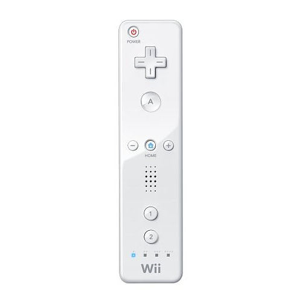

#20218 1 2008-05-12T20:45:22Z goldeninja Wiiware is a games download service, very similar to xBox Live Arcade, available on Nintendo's popular shiny white cuboid. This has already been released in USA and Japan, and comes out in Europe on 20th May. I am here to ask: Should n+, the upcoming installment in the n world, be available on WiiWare? I have the WiiMote in front of me and can easily map the controls: 2/up d-pad = jump, left/right d-pad = left/right, Plus/Minus = Pause and 1/B/down d-pad = kill button. I can't see why it can't be incorporated, but could understand a wait for it.
Awaiting feedback,
GoldeNinja
#435699 2 2008-05-13T04:01:01Z Condog Yes. Yes it should have been. But unfortunately, Wiiware is for older games, so it would have been applied. It would have been great if N+ were released on Wii though...
#435701 3 2008-05-13T04:18:25Z PsychoSnail Yes. Yes it should have been. But unfortunately, Wiiware is for older games, so it would have been applied. It would have been great if N+ were released on Wii though...
That would've been cool, but I don't know how N+ would work with the Wii's controllers.
#435742 4 2008-05-13T10:06:02Z Tapp Yeah, I wouldn't see the use of the motion sensor.
#435743 5 2008-05-13T10:06:37Z wedgie 
Turn that thing on it's side and you've got a pretty standard controller there with a d-pad and more than enough buttons.
")
#435746 6 2008-05-13T10:17:32Z Condog Turn that thing on it's side and you've got a pretty standard controller there with a d-pad and more than enough buttons.
Yeah, i wouldn't have thought i would be that hard to imagine how to use it.

#435756 7 2008-05-13T10:47:52Z Be_Happy_:) Not really condog. After you get use to it, it proboly gets easy.
#435758 8 2008-05-13T11:22:12Z HylianHitman Who is this guy? Is he from Slick or something? It sounds like he's made a decision and is telling people what's going to happen. I thought N+ was under copyright anyway.
#435759 9 2008-05-13T11:31:35Z smort But unfortunately, Wiiware is for older games...
No. They released a service yesterday called WiiWare with new downloadable games. You're thinking of the Virtual Console games, although the mixup is easy because nintendo announced WiiWare before the launch of the Wii.
Mare and Raigan have a contract with Micro$oft, and they really want to put Robotology on the Wii. But not N+. If you're a nintendo fan, it's coming out for DS.
#435801 10 2008-05-13T15:20:05Z Chase Not till 2009 at least. Exclusivity contract.
#435895 11 2008-05-13T21:34:37Z Condog But unfortunately, Wiiware is for older games...
No. They released a service yesterday called WiiWare with new downloadable games. You're thinking of the Virtual Console games, although the mixup is easy because nintendo announced WiiWare before the launch of the Wii.
Mare and Raigan have a contract with Micro$oft, and they really want to put Robotology on the Wii. But not N+. If you're a nintendo fan, it's coming out for DS.

Really? You're serious? Not kidding?

That's awesome! No wonder missed it! I'm gonna have to check it out. My mistake smort.

#435900 12 2008-05-13T21:46:41Z Ad You'll have to wait 'til the 20th (I think), Condog. You know how Ninty are.
I'd love to see both games on WiiWare. I'm not sure how Robotology works, but if it works how I imagine, point and click from the Wii remote and directions from the Nunchuk would work to perfection for the rope-slinging action.
#435950 13 2008-05-14T00:50:30Z Templex I don't feel like finding it, but I believe I read something on the Metanet blog about how they signed an exclusivity contract for N+ with Microsoft, which excludes PCs and handhelds. So if my head isn't making that up, then no, you won't be seeing N+ on the Wii.
#435952 14 2008-05-14T01:03:36Z PsychoSnail I don't feel like finding it, but I believe I read something on the Metanet blog about how they signed an exclusivity contract for N+ with Microsoft, which excludes PCs and handhelds. So if my head isn't making that up, then no, you won't be seeing N+ on the Wii.
Wait, I thought N+ was coming out for the DS and PSP also.
Does the fact that the DS and PSP versions are very different from the XBLA version have anything to do with that?
#435960 15 2008-05-14T02:14:32Z Templex I should've been a bit clearer with my wording. What I meant is, Microsoft has control over N+ with exception to the handhelds and PC area. So you won't be seeing it on any console but the 360, definitely will be seeing it on the handhelds, and possibly on the PC.
#435962 16 2008-05-14T02:22:42Z PsychoSnail I should've been a bit clearer with my wording. What I meant is, Microsoft has control over N+ with exception to the handhelds and PC area. So you won't be seeing it on any console but the 360, definitely will be seeing it on the handhelds, and possibly on the PC.
Ah, that makes more sense.

#436000 17 2008-05-14T06:52:14Z Ad I should've been a bit clearer with my wording. What I meant is, Microsoft has control over N+ with exception to the handhelds and PC area. So you won't be seeing it on any console but the 360, definitely will be seeing it on the handhelds, and possibly on the PC.
I remember reading that also, but I think it stated a year's exclusivity, hence Chase's post, so maybe there's a glimpse of hope for WiiWare.
#436037 18 2008-05-14T13:42:11Z HylianHitman N+ on the Live Arcade is a different game to the DS and PSP versions.
Remember?
#436038 19 2008-05-14T13:44:42Z Spawn of Yanni Erm. How is that relevant, again?
#436040 21 2008-05-14T13:48:07Z Spawn of Yanni Yes, yes, I understand that. How is it relevant to what's happening here?